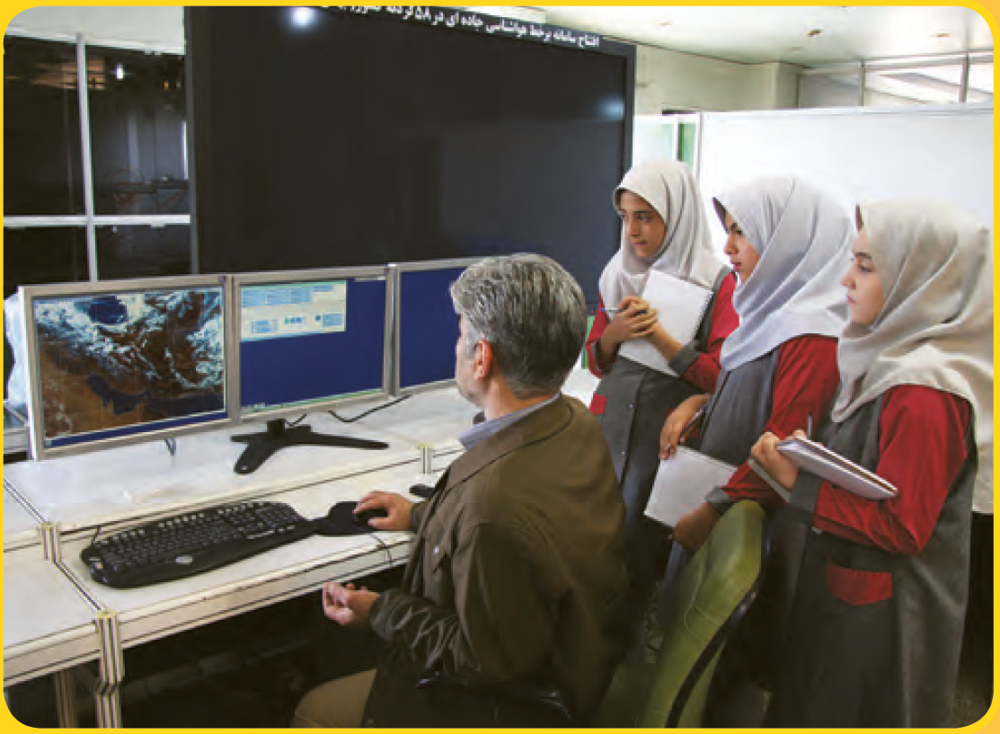
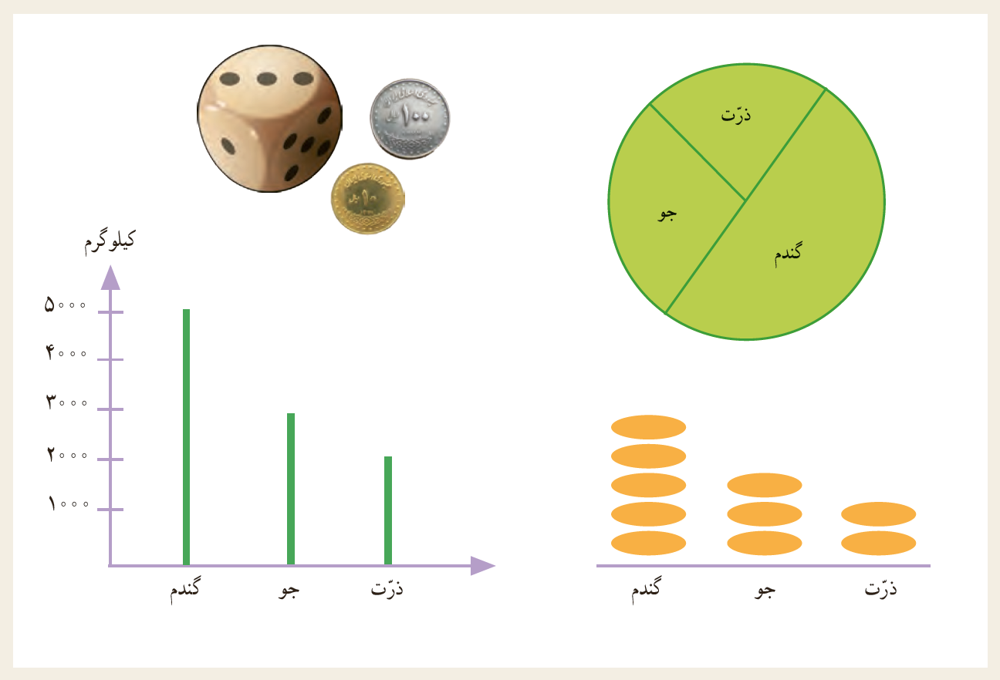

فصل ۷: آمار و احتمال
 
آمار و احتمال بخشهایی از ریاضیّاتاند که در زندگی ما کاربردهای زیادی دارند. پیشبینی وضع هوا یکی از کاربردها آمار و احتمال در زندگی روزمره است و در بسیاری از کارها از جمله پرواز هواپیماها و ساختمانسازی کاربرد دارد.